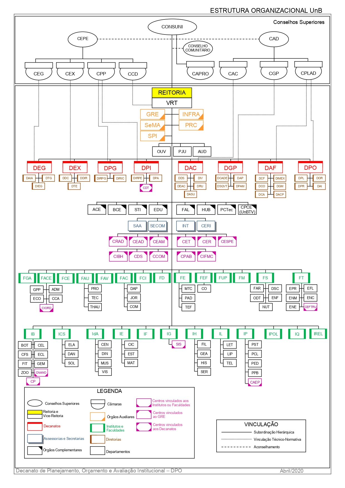
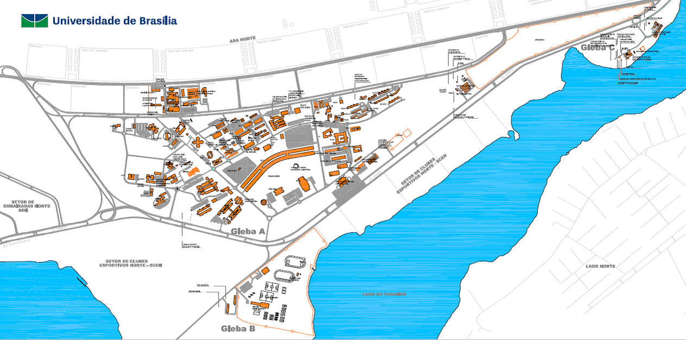

ANUÁRIO ESTATÍSTICO 2020
Setembro de 2020
Apresentação
A Universidade de Brasília – UnB apresenta o Anuário Estatístico 2020. O Anuário Estatístico tem por finalidade consolidar e disponibilizar informações à toda comunidade acadêmica, além de se constituir em um importante referencial para estudos e pesquisas sobre a política educacional da Universidade. Está organizado em uma série de cinco anos, possibilitando análises comparadas, longitudinais e de evolução em cada área de conhecimento. O controle dos registros acadêmicos ocorre por meio do Cadastro de Pessoa Física (CPF) de cada estudante.
Esta é a 22ª edição do anuário, iniciado no ano de 1988. Os dados aqui informados referem-se a cursos e alunos de graduação e de pós-graduação do ano de 2019, com retrospectiva desde o ano de 2015, tendo como fonte de dados o Censo da Educação Superior (CenSup), após sua consolidação pelo Instituto de Estudos e Pesquisas Educacionais Anísio Teixeira (INEP), autarquia do Ministério da Educação (MEC).
Para a busca de informações atualizadas, o Decanato de Planejamento, Orçamento e Avaliação Institucional enviou, em 26 de maio de 2020, solicitações de informações aos diferentes setores, Institutos e Faculdades da UnB. Em 8 de julho, ainda por meio do SEI, foi reiterada a solicitação de informações referentes ao ano de 2019 para compor o Anuário Estatístico 2020.
Com a utilização dessa base, mantém-se a consistência histórica e institucional de informações da UnB, em um processo dinâmico de constante aperfeiçoamento.
Inovação desta versão
Continuando a tendência de inovações para o Anuário Estatístico, este ano o Anuário foi feito inteiramente no software livre R (R Core Team 2020), por meio do pacote RMarkdown (Xie 2020). Essa mudança teve como objetivo tornar o processo de confecção do documento o mais linear possível, aumentando a confiabilidade das informações aqui contidas.
Além disso, ganhamos em transparência, pois todo o fluxo de trabalho está documentado no repositório github/dai-dpo/anuario2020. No entanto não é possível reproduzir ou replicar as tabelas e gráficos aqui contidos, pois devido à sensibilidade dos dados tratados (informações pessoais de estudantes e servidores da UnB), a base de dados bruta não pôde ser disponibilizada.
Assim como na última versão, é possível baixar todas as tabelas que compõem o documento, garantindo o fácil acesso a diversas informações da Universidade de Brasília.
Lista de autoridades
Jair Messias Bolsonaro Presidente da República
Abraham Weintraub Ministro da Educação
Arnaldo Barbosa de Lima Júnior Secretário de Educação Superior – Ministério da Educação – MEC
Universidade de Brasília
Reitora: Márcia Abrahão Moura
Vice-Reitor: Enrique Huelva Unternbäumen
Decana de Administração: Maria Lucília dos Santos
Decano de Assuntos Comunitários: Ileno Izídio da Costa
Decana de Ensino de Graduação: Sérgio Antônio Andrade de Freitas
Decana de Extensão: Olgamir Ferreira de Paiva
Decano de Gestão de Pessoas: Carlos Vieira Mota
Decana de Pesquisa e Inovação: Maria Emilia Walter
Decana de Planejamento, Orçamento e Avaliação Institucional: Denise Imbroisi
Decana de Pós-Graduação: Adalene Moreira Silva
Equipe DPO
Decanato de Planejamento, Orçamento e Avaliação Institucional (DPO)
Decana de Planejamento, Orçamento e Avaliação Institucional: Denise Imbroisi
Diretora de Avaliação e Informações Gerenciais: Andrea Felippe Cabello (até 31/12/2019)
Diretor de Avaliação e Informações Gerenciais: Guilherme Viana Ferreira
Coordenador de Informações Gerenciais: Roberto de Freitas Neder
Organização: Guilherme Viana Ferreira
Revisão: –
Equipe Técnica:
Alexandre Cardias Pereira Alves
Geisa Rodrigues Novais
Pedro Ivo Guimarães Póvoa
Roberto de Freitas Neder
Coordenação Editoria, Projeto Gráfico, Editoração e Capa: DAI/DPO
Este anuário foi organizado com base nas informações prestadas pelas unidades acadêmicas e administrativas, pelos centros, órgãos complementares e sistemas eletrônicos de dados da Universidade de Brasília.
Universidade de Brasília
Decanato de Planejamento e Orçamento – Prédio da Reitoria, bloco B, 1º andar
Campus Universitário Darcy Ribeiro – Asa Norte
70910-900 Brasília, DF, Brasil
Telefones: + (61) 3107-0620 e 3107-0621
http://www.unb.br
unb@unb.br
dpo@unb.br
dai@unb.br
Lista de siglas e denominações
FUNDAÇÃO UNIVERSIDADE DE BRASÍLIA (FUB)
CONSELHO DIRETOR
SCD Secretaria do Conselho Diretor
UNIVERSIDADE DE BRASÍLIA (UnB)
CONSELHOS SUPERIORES
CONSUNI Conselho Universitário
CEPE Conselho de Ensino, Pesquisa e Extensão
CAC Câmara de Assuntos Comunitários
CAD Conselho de Administração
CAPRO Câmara de Projetos, Convênios, Contratos e Instrumentos Correlatos
CCD Câmara da Carreira Docente
CEG Câmara de Ensino de Graduação
CEX Câmara de Extensão
CGP Câmara de Gestão de Pessoas
CPLAD Câmara de Planejamento e Administração
CPP Câmara de Pesquisa e Pós-Graduação
CONSELHO COMUNITÁRIO
REITORIA
VRT Vice-Reitoria
GRE Gabinete do Reitor
SCA Subsecretaria de Comunicação Administrativa
SOC Subsecretaria de Órgãos Colegiados
PRC Prefeitura do Campus
DAL Diretoria de Administração e Logística
DSG Diretoria de Serviços Gerais
DENA Diretoria de Engenharia e Arquitetura
INFRA Secretaria de Infraestrutura
PJU Procuradoria Jurídica
AUD Auditoria
OUV Ouvidoria
DECANATOS
DEG Decanato de Ensino de Graduação
DTG Diretoria Técnica de Graduação
DAIA Diretoria de Acompanhamento e Integração Acadêmica
DEGD Diretoria de Ensino de Graduação a Distância
DIEG Diretoria de Inovação e Estratégias para o Ensino de Graduação
DEX Decanato de Extensão
DTE Diretoria Técnica de Extensão
DDIR Diretoria de Desenvolvimento e Integração Regional
INTERFOCO Diretoria de Capacitação e Formação Continuada
DPG Decanato de Pós-Graduação
DIRPG Diretoria de Pós-Graduação
DIRIC Diretoria de Fomento à Iniciação Científica
DPI Decanato de Pesquisa e Inovação
DIRPE Diretoria de Pesquisa
DPA Diretoria de Apoio a Projetos Acadêmicos
CDT Centro de Desenvolvimento Tecnológico
DAC Decanato de Assuntos Comunitários
DDS Diretoria de Desenvolvimento Social
DEL Diretoria de Esporte e Lazer
DIV Diretoria da Diversidade
DRU Diretoria do Restaurante Universitário
DOCCA Diretoria de Organizações Comunitárias, Cultura e Arte
DAF Decanato de Administração
DTER Diretoria de Terceirização
DIMEX Diretoria de Importação e Exportação
DGM Diretoria de Gestão de Materiais
DCF Diretoria de Contabilidade e Finanças
DCO Diretoria de Compras
DGP Decanato de Gestão de Pessoas
DCADE Diretoria de Capacitação, Desenvolvimento e Educação
DAP Diretoria de Administração de Pessoas
DSQVT Diretoria de Saúde, Segurança e Qualidade de Vida no Trabalho
DPAM Diretoria de Provimento, Acompanhamento e Movimentação
DPO Decanato de Planejamento, Orçamento e Avaliação Institucional
DPL Diretoria de Planejamento
DOR Diretoria de Orçamento
DAI Diretoria de Avaliação e Informações Gerenciais
DPR Diretoria de Processos Organizacionais
ASSESSORIAS E SECRETARIAS
SAA Secretaria de Administração Acadêmica
SECOM Secretaria de Comunicação
SGP Secretaria de Gestão Patrimonial
INT Assessoria de Assuntos Internacionais
CERI Coordenação do Cerimonial
ÓRGÃOS COMPLEMENTARES
ACE Arquivo Central
BCE Biblioteca Central
CPD Centro de Informática
EDU Editora Universidade de Brasília
FAL Fazenda Água Limpa
HUB Hospital Universitário
PCTec Parque Científico e Tecnológico da UnB
CPCE (UnBTV) Centro de Produção Cultural e Educativa
CENTROS
CCOM Centro de Políticas, Direito, Economia e Tecnologias das Comunicações
CDS Centro de Desenvolvimento Sustentável
CEAD Centro de Educação a Distância
CEPLAN Centro de Planejamento
CET Centro de Excelência em Turismo
CER Centro de Estudos do Cerrado
CESPE Centro de Seleção e de Promoção de Eventos
CIFMC Centro Internacional de Física da Matéria Condensada
CIORD Centro Integrado de Ordenamento Territorial (FACE)
CME Centro de Manutenção de Equipamentos Científicos
CPAB Centro de Pesquisa e Aplicação de Bambu e Fibras Naturais
CPCE Centro de Produção Cultural e Educativa
CRAD Centro de Referência em Conservação da Natureza e Recuperação de Áreas Degradadas
DATAUnB Centro de Pesquisas de Opinião Pública
CEAM Centro de Estudos Avançados Multidisciplinares
UNIDADES ACADÊMICAS
FACE Faculdade de Economia, Administração, Contabilidade e Gestão de Políticas Públicas
ADM Departamento de Administração
CCA Departamento de Ciências Contábeis e Atuariais
ECO Departamento de Economia
CIORD Centro Integrado de Ordenamento Territorial
GPP Gestão de Políticas Públicas
FAC Faculdade de Comunicação
DAP Departamento de Audiovisuais e Publicidade
JOR Departamento de Jornalismo
COM Departamento de Comunicação Organizacional
FAU Faculdade de Arquitetura e Urbanismo
PRO Departamento de Projeto, Expressão e Representação em Arquitetura e Urbanismo
TEC Departamento de Tecnologia em Arquitetura e Urbanismo
THAU Departamento de Teoria e História em Arquitetura e Urbanismo
FAV Faculdade de Agronomia e Medicina Veterinária
FCE Faculdade UnB-Ceilândia
FCI Faculdade de Ciência da Informação
FD Faculdade de Direito
FE Faculdade de Educação
MTC Departamento de Métodos e Técnicas
PAD Departamento de Planejamento e Administração
TEF Departamento de Teoria e Fundamentos
FEF Faculdade de Educação Física
CO Centro Olímpico
FGA Faculdade UnB-Gama
FM Faculdade de Medicina
NMT Núcleo de Medicina Tropical
FS Faculdade de Ciências da Saúde
FAR Departamento de Farmácia
DSC Departamento de Saúde Coletiva
ENF Departamento de Enfermagem
NUT Departamento de Nutrição
ODT Departamento de Odontologia
FT Faculdade de Tecnologia
EFL Departamento de Engenharia Florestal
ENC Departamento de Engenharia Civil e Ambiental
ENE Departamento de Engenharia Elétrica
ENM Departamento de Engenharia Mecânica
EPR Departamento de Engenharia de Produção
CEFTRU Centro de Formação de Recursos Humanos em Transportes
FUP Faculdade UnB-Planaltina
CETEC Centro Transdisciplinar de Educação do Campo
IB Instituto de Ciências Biológicas
BOT Departamento de Botânica
CEL Departamento de Biologia Celular
CFS Departamento de Ciências Fisiológicas
ECL Departamento de Ecologia
FIT Departamento de Fitopatologia
GEM Departamento de Genética e Morfologia
ZOO Departamento de Zoologia
CNANO Centro de Nano Ciência e Nanotecnologia
CP Centro de Primatologia
ICS Instituto de Ciências Sociais
CEPPAC Centro de Pesquisa e Pós-Graduação sobre as Américas
DAN Departamento de Antropologia
SOL Departamento de Sociologia
ELA Departamento de Estudos Latino Americanos
IdA Instituto de Artes
CEN Departamento de Artes Cênicas
DIN Departamento de Desenho Industrial
MUS Departamento de Música
VIS Departamento de Artes Visuais
IE Instituto de Ciências Exatas
CIC Departamento de Ciência da Computação
EST Departamento de Estatística
MAT Departamento de Matemática
IF Instituto de Física
IG Instituto de Geociências
GEO Departamento de Geologia Geral e Aplicada
GMP Departamento de Mineralogia e Petrologia
GRM Departamento de Geoquímica e Recursos Minerais
SIS Observatório Sismológico
IH Instituto de Ciências Humanas
FIL Departamento de Filosofia
GEA Departamento de Geografia
HIS Departamento de História
SER Departamento de Serviço Social
IL Instituto de Letras
LET Departamento de Línguas Estrangeiras e Tradução
LIP Departamento de Linguística, Português e Línguas Clássicas
TEL Departamento de Teoria Literária e Literaturas
IP Instituto de Psicologia
CAEP Centro de Atendimento e Estudos Psicológicos
PCL Departamento de Psicologia Clínica
PED Departamento de Psicologia Escolar e do Desenvolvimento
PPB Departamento de Processos Psicológicos Básicos
PST Departamento de Psicologia Social e do Trabalho
IPOL Instituto de Ciência Política
IQ Instituto de Química
IREL Instituto de Relações Internacionais
Organograma
 Fonte: http://www.dpo.unb.br/index.php?option=com_content&view=article&id=24&Itemid=744?menu=425
Mapa do Campus Darcy Ribeiro

References
R Core Team. 2020. R: A Language and Environment for Statistical Computing. Vienna, Austria: R Foundation for Statistical Computing. https://www.R-project.org/.
Xie, Yihui. 2020. Bookdown: Authoring Books and Technical Documents with R Markdown. https://CRAN.R-project.org/package=bookdown.